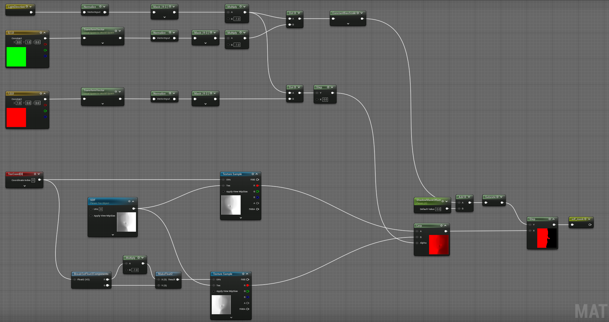
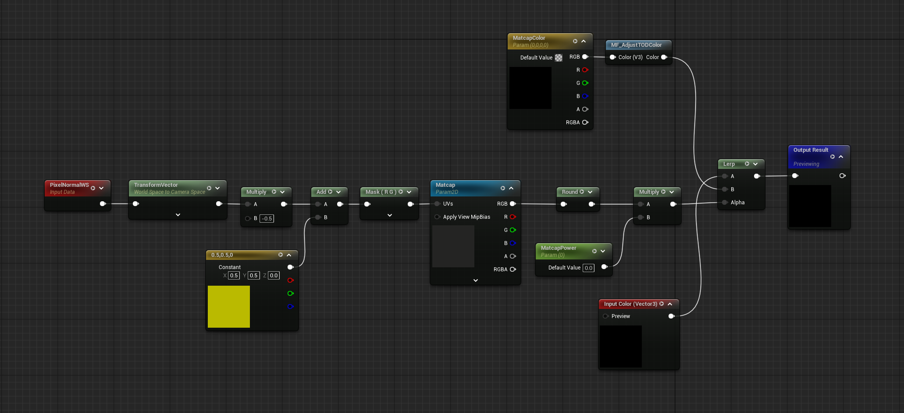
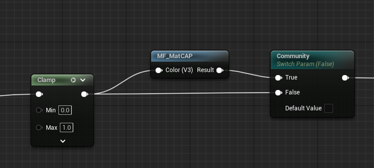
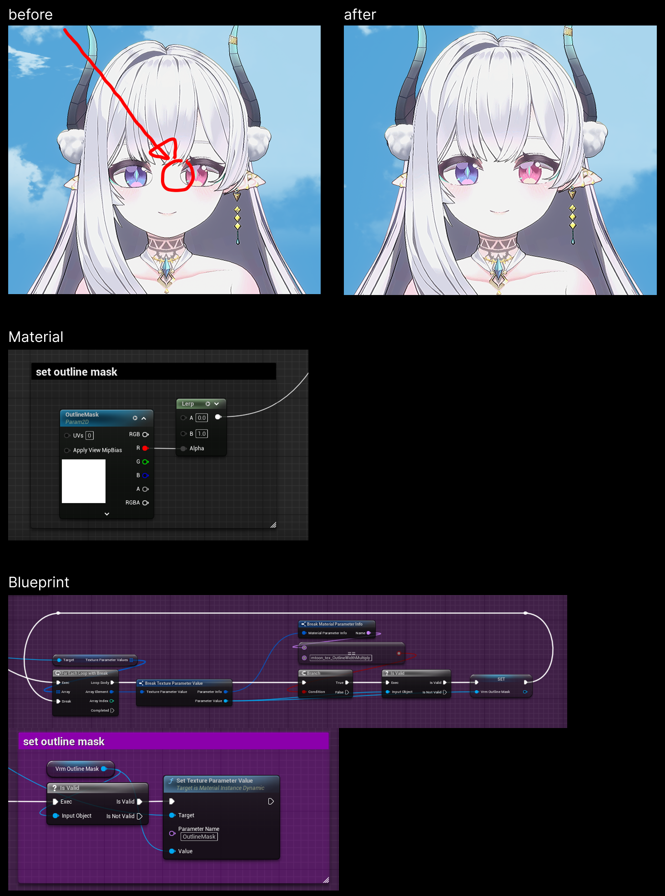
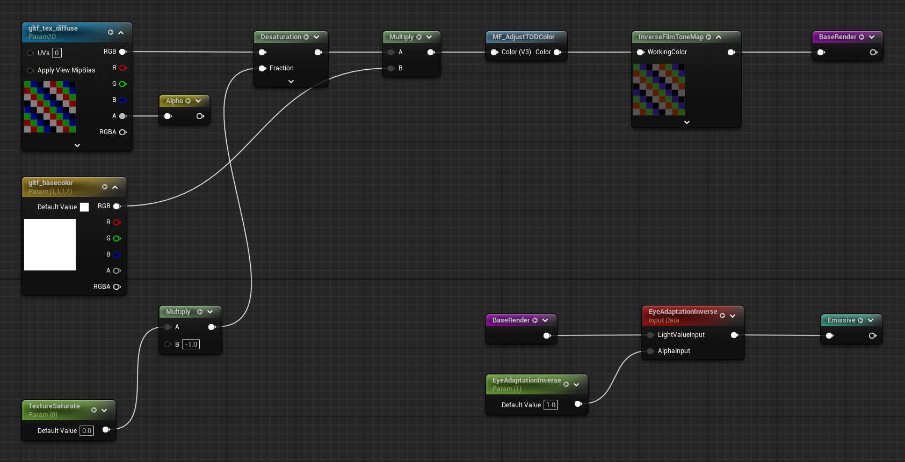

NPR Shader System
MetaHuman to anime, 4 NPR looks over PBR
UE5 · Material · Post Process — Company, 2023–2024
Problem
Early in the project, a decision was made to switch from MetaHuman-based realistic rendering to an anime style. Characters needed to be rendered in NPR while keeping PBR backgrounds, and the in-house characters and external VRM models had different material structures, making it impossible to achieve a consistent look with a single approach.
Solution
Built a Cel Shading-based NPR prototype, then led system expansion and maintenance.
Split the approach into Custom Depth + Post Process for in-house and Emissive + Inverted Hull for VRM, creating 4 NPR looks. The core nodes carried over from the prototype are SDF face shadow and Dot Product-based two-tone shading.
Result
| Category | Result |
|---|---|
| Rendering Transition | Full transition from MetaHuman to anime style |
| NPR Looks | 4 looks — art team can change styles by swapping Toon Ramps |
| Material Scale | 698 MIs, 1,371 textures |
| Material Separation | In-house (dedicated toon) + VRM (MToon reimplementation) built separately |
| Background Coexistence | PBR backgrounds + NPR characters in the same scene |
| Look Dev | Finalized per-character looks with art team — style changes possible via Toon Ramp swap |

PBR background + NPR character in the same scene
4 Base Materials
In-house and VRM have different material structures, and even within VRM, realistic and non-realistic parts are mixed. So four separate base materials were created.

4 base materials
1. In-house Toon
Dedicated toon material for in-house characters. On top of a structure that separates characters via Custom Depth buffer and renders them in NPR style through Post Process, I developed and maintained features such as SDF face shadow and Matcap reflection.
Global Shadow OFF / ON toggle demo
SDF Face Shadow
Standard NdotL produces unintuitive shadows around the nose and eye sockets. By controlling shadow boundaries with pre-baked distance information in SDF textures, face shadows fall naturally even as the lighting angle changes.
SDF face shadow lighting demo

SDF Shadow Mask texture

SDF texture sample → Light Direction dot → shadow mask output
Matcap Reflection
PBR reflections don't suit NPR environments. I used Matcap textures for view-based reflections on hair highlights, skin sheen, etc. Turned out it could fake rim lighting too, so I built Matcap Painter to make those textures faster.
Matcap reflection demo


2. VRM Toon
Restructured parameter input names based on the in-house toon material to conform to MToon conventions. Ensured MToon textures and flags are automatically connected upon VRM import. Outline uses the same Post Process approach as the in-house material.

PP outline mask processing — unnecessary line removal + Material/Blueprint implementation
3. VRM PBR
Lightweight version of the VRM4U plugin's PBR material. Renders realistic parts such as skin, irises, and accessories based on a default SSS Profile. Like Zo Toon, the focus was on matching the tone with existing in-house characters.

4. VRM Zo Toon
The existing in-house material grabbed color from the Custom Depth buffer, making realistic/non-realistic mixing impossible. To solve this, I created a new toon shading system that operates in the Emissive channel. Outline uses the Inverted Hull method. Matching the tone with existing in-house characters was critical.

Zo Toon material node graph — Emissive-based toon shading

Zo Toon(Inverted Hull) vs VRM Toon(Post Process) outline comparison
Zo Toon + PBR non-realistic/realistic combination showcase

PBR realistic part + Toon non-realistic part mixed result
| Material | Base Pass | Samplers |
|---|---|---|
| In-house Toon | 433 inst | 7 / 16 |
| VRM Toon | 369 inst | 4 / 16 |
| Zo Toon | 226 inst | 3 / 16 |
Enabled realistic/non-realistic mixing while reducing shader cost by 48% (vs in-house)
UDS / ToD 통합 테스트
A 9-frame grid verifying that all shaders behave consistently across various lighting and Time of Day conditions.